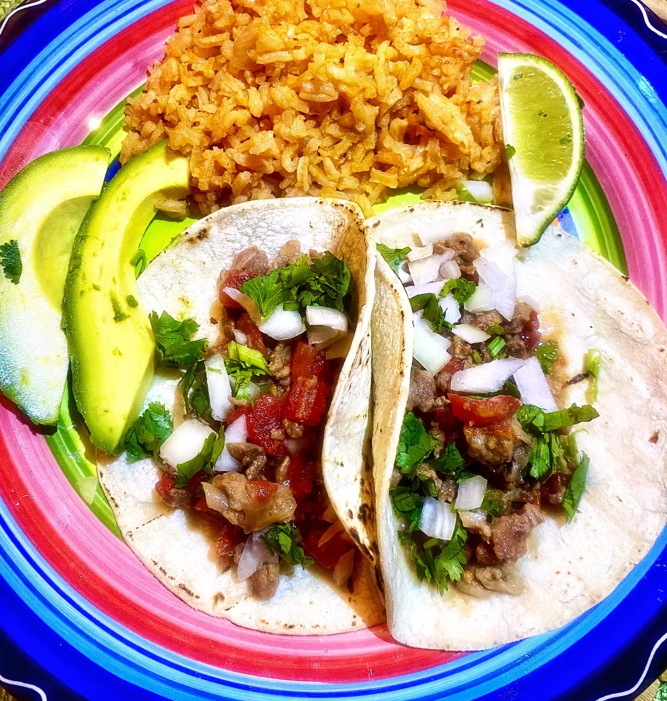

Description
Carne picada is a cross between carne asada and ground beef. These tacos are simple and easy. I top mine with cilantro, onions, a squeeze of fresh lime and salsa.
Ingredients
- 8 (7 inch) corn tortillas, warmed
- 2 cups prepared carne picada (see Cook's Note)
- ½ cup chopped onion, or to taste
- ¼ cup chopped fresh cilantro, or to taste
- 2 tablespoons salsa, or to taste
- ½ limes, cut into wedges
Steps
- Heat tortillas directly on a gas grill or in the microwave. Place 2 tablespoons carne picada on each tortilla. Top with onions, cilantro, and salsa. Serve with lime wedge.